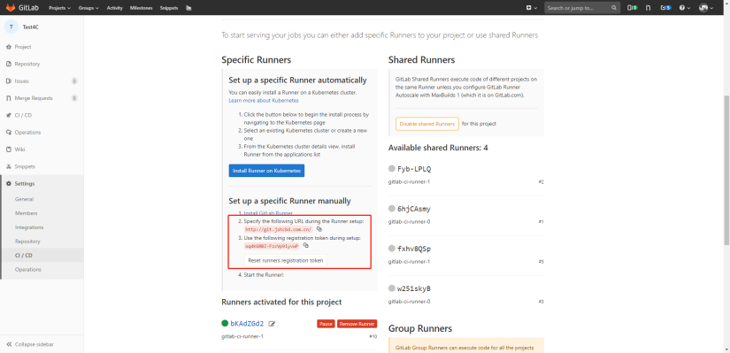

Gitlab CI
Runner
https://docs.gitlab.com/runner/install/
Docker-Runner
Gitlab-runner 安装：更好的管理方式是k8s
- 拉取镜像
- 启动gitlab-runner
docker run -d --name gitlab-runner --restart always \
-v /mnt/gitlab-runner/config:/etc/gitlab-runner \
-v /var/run/docker.sock:/var/run/docker.sock \
gitlab/gitlab-runner
- 注册到gitlab 根据gitlab admin中的runner的信息，填写以下信息
docker run --rm -t -i -v /mnt/gitlab-runner/config:/etc/gitlab-runner gitlab/gitlab-runner register \
--non-interactive \
--url "http://172.16.1.181:8090/" \
--registration-token "DA1wNdAchnBFH_frXa9N" \
--executor "docker" \
--docker-image alpine:latest \
--description "docker-runner" \
--tag-list "docker,test"
如果出现了no route to host异常，需要在宿主机上添加端口防火墙(原因见docker章节No Route to Host 问题)
K8s-Runner
Yaml 安装
Yaml配置原件：gitlab-runner.yaml，注意修改 gitlab 地址和 runner token，提前创建 gitlab 名空间。
注意:
-
replicas: Runner实例数
-
CI_SERVER_URL: gitlab服务器地址
- GITLAB_CI_TOKEN: gitlab项目token
- token需要base转换:
echo oqdKGRBZ-FzcVp9iyvwP | base64 -w0

创建 runner：kubectl create -f gitlab-runner.yaml
Helm 安装
https://docs.gitlab.com/runner/install/kubernetes.html
.gitlab-ci.yml 配置
需要在项目中创建 .gitlab-ci.yml 文件，下面是个示例，其中tags是创建gitlab-runner时指定的tags，匹配上才会有runner执行CI：
image: maven:latest
stages:
- build
- test
- run
variables:
MAVEN_OPTS: "-Dmaven.repo.local=.m2/repository"
cache:
paths:
- .m2/repository/
- target/
build:
stage: build
script:
- mvn $MAVEN_CLI_OPTS compile
only:
- master
tags:
- test
test:
stage: test
script:
- mvn $MAVEN_CLI_OPTS test
only:
- master
tags:
- test
deploy:
stage: deploy
script:
- echo "deploy over..."
only:
- master
tags:
- test
- Pipeline：相当于一次构建任务，里面可以包含多个流程，如安装依赖、运行测试、编译、部署测试服务器、部署生产服务器等。
- 任何提交或者 Merge Request 的合并都可以触发 Pipeline 构建；
- Stages：表示一个构建阶段。一次 Pipeline 中可定义多个 Stages
- 所有 Stages 会顺序运行，即当一个 Stage 完成后，下一个 Stage 才会开始
- 只有当所有 Stages 完成后，该构建任务才会成功
- 如果任何一个 Stage 失败，那么后面的 Stages 不会执行，该构建任务失败
Pipeline
Branch pipelines that run for Git push events to a branch, like new commits or tags.
Tag pipelines that run only when a new Git tag is pushed to a branch.
Merge request pipelines that run for changes to a merge request, like new commits or selecting the Run pipeline button in a merge request’s pipelines tab.
Scheduled pipelines.
| Variables | Branch | Tag | Merge request | Scheduled |
|---|---|---|---|---|
CI_COMMIT_BRANCH |
Yes | Yes | ||
CI_COMMIT_TAG |
Yes | Yes, if the scheduled pipeline is configured to run on a tag. | ||
CI_PIPELINE_SOURCE = push |
Yes | Yes | ||
CI_PIPELINE_SOURCE = scheduled |
Yes | |||
CI_PIPELINE_SOURCE = merge_request_event |
Yes | |||
CI_MERGE_REQUEST_IID |
Yes |
Jobs
表示构建工作，即某个 Stage 里面执行的工作。一个 Stage 中可定义多个 Jobs
-
默认，相同 Stage 中的 Jobs 会并行执行
-
相同 Stage 中的 Jobs 都执行成功时，该 Stage 才会成功
-
如果任何一个 Job 失败，那么该 Stage 失败，即该构建任务失败
可以通过needs字段改变执行顺序。
- 同一个stage的：job1 和 job2 是可以并行的。
- job1之后将会启动 job3 (立即执行, 不会等待job2完成作业)
- job2之后将会启动 job4 (立即执行, 不会等待job1完成作业)
stages:
- stage-1
- stage-2
job-1:
stage: stage-1
needs: []
script:
- echo "job-1 started"
- sleep 5
- echo "job-1 done"
job-2:
stage: stage-1
needs: []
script:
- echo "job-2 started"
- sleep 60
- echo "job-2 done"
job-3:
stage: stage-2
needs: [job-1]
script:
- echo "job-3 started"
- sleep 5
- echo "job-3 done"
job-4:
stage: stage-2
needs: [job-2]
script:
- echo "job-4 started"
- sleep 5
- echo "job-4 done"
variables
GitLab CI/CD 预先定义的变量：https://docs.gitlab.com/ee/ci/variables/predefined_variables.html
.gitlab-ci.yaml中定义变量：
- jobs 中定义
variables为{}表明不需要全局变量；
variables:
GLOBAL_VAR: "A global variable"
job1:
variables:
JOB_VAR: "A job variable"
script:
- echo "Variables are '$GLOBAL_VAR' and '$JOB_VAR'"
job1:
variables: {}
script:
- echo This job does not need any variables
将变量传递到其它job
create a new environment variables in a job, and pass it to another job in a later stage.
build-job:
stage: build
script:
- echo "BUILD_VARIABLE=value_from_build_job" >> build.env
artifacts:
reports:
dotenv: build.env
test-job:
stage: test
script:
- echo "$BUILD_VARIABLE" # Output is: 'value_from_build_job'
cache
https://docs.gitlab.com/ee/ci/caching/
cache是用来指定 jobs 之间可以缓存的文件和目录
-
Locally defined cache overrides globally defined options；
-
不同的
key下的缓存也不会相互影响； -
cache 在同一个项目的不同的 pipeline 之间也实现共享；
-
不同的项目不能共享 cache；
-
如果整个 pipeline 配置全局的 cache，意味着每个 job 在没有特殊配置的情况下会使用全局的配置
-
对整个 job 的 cache 禁用
默认的配置是 cache:policy 中的 pull-push 策略：
- pull：每个 job 会在开始执行前将对应路径的文件下载下来；
- push：任务结束前重新上传，不管文件是否有变化；
- 可以单独指定 pull 或者 push；
示例：maven项目配置缓存
image: nnntln/3.6.1-jdk-8:latest
variables:
MAVEN_OPTS: -Dmaven.repo.local=/cache/maven.repository
cache:
key: PortalReportBackend
paths:
- /root/.m2/repository
stages:
- build
- execute
build:
stage: build
script: /usr/lib/jvm/java-8-openjdk-amd64/bin/javac Hello.java
artifacts:
paths:
- Hello.*
execute:
stage: execute
script: /usr/lib/jvm/java-8-openjdk-amd64/bin/java Hello
分布式 cache
artifacts
Use artifacts to pass intermediate build results between stages.
- Subsequent jobs in later stages of the same pipeline can use artifacts.
- Different projects cannot share artifacts.
- Artifacts expire after 30 days by default. You can define a custom expiration time.
- The latest artifacts do not expire if keep latest artifacts is enabled.
- Use dependencies to control which jobs fetch the artifacts
artifacts is used to specify a list of files and directories which should be attached to the job when it succeeds, fails, or always.
The artifacts will be sent to GitLab after the job finishes and will be available for download in the GitLab UI.
- 默认30天有效期，可以指定
expire_in字段；
job artifacts
https://docs.gitlab.com/ee/ci/pipelines/job_artifacts.html
job 的制品，可以在 Pipeline界面进行下载
Keep artifacts from most recent successful jobs
By default artifacts are always kept for successful pipelines for the most recent commit on each ref.
- 最新的artifacts 不会受
expire_in字段影响；
Keep the latest artifacts for all jobs in the latest successful pipelines
By default the artifacts of the most recent pipeline for each Git ref are locked against deletion and kept regardless of the expiry time.
- 默认流水线的 artifacts 不受过期时间影响；
- 此设置优先于项目级别设置（Keep artifacts from most recent successful jobs）
Pipeline artifacts
Pipeline artifacts are different to job artifacts because they are not explicitly managed by .gitlab-ci.yml definitions.
Pipeline artifacts are used by the test coverage visualization feature to collect coverage information.
Gitlab Webhook
默认情况下
- 新建分支，会触发 pipeline（需要分析是否符合预期）
- push 时 total_commits_count 为0时，表示新建分支会触发 pipeline hook
- 1次 push webhook；
-
3次 pipeline webhook(pending -> running -> succeed)
-
open a MergeRequest 触发一次 webhook，action 为 opened， "merge_status": "preparing",
-
没有 pipeline id，此时只能生成链接，点击查看
-
approve a MergeRequest 触发一次 webhook, action 为 approved
-
merge Request 的时候，state 变成 merged ，action 为 merge
-
close merge request 时，state 变成 closed ，action 为 close
Quick action
Gitlab 对于 Merge Request 支持 quick action，如 /approve, /merge 。
When to Run
https://docs.gitlab.com/ee/ci/jobs/job_control.html
手动触发 job：
- 需要在 Pipeline 界面进行点击对应的Job的阶段的按钮，才会执行；
- Pipeline 界面的 “Run Pipeline" 也不会触发
when: manual修饰的Job；
rules： include or exclude jobs in pipelines
job:on-schedule:
rules:
- if: $CI_PIPELINE_SOURCE == "schedule"
script:
- make world
job:
rules:
- if: $CI_PIPELINE_SOURCE == "push"
- if: $VAR == "string value"
# Include the job and set to when:manual if any of the follow paths match a modified file.
changes:
- Dockerfile
- docker/scripts/*
when: manual
allow_failure: true
script:
- make build
only：includes the job if all of the keys have at least one condition that matches.
except：excludes the job if any of the keys have at least one condition that matches.
job:
only:
# use special keywords, 等价于 only:refs
- tags
- triggers
- schedules
# 分支
- master
# 通过变量控制是否执行，支持 && ||
variables:
- $CI_COMMIT_MESSAGE =~ /skip-end-to-end-tests/
# 通过文件的改动控制是否执行
changes:
- "*.md"
#
Environments and deployments
将环境信息和部署信息进行关联，方便进行查看和管理。
环境就像CI作业的标记，描述代码的部署位置。当作业将代码版本部署到环境时，会创建部署，因此每个环境都可以有一个或多个部署。
- Provides a full history of deployments to each environment.
- Tracks your deployments, so you always know what is deployed on your servers.
Review Apps
https://docs.gitlab.cn/jh/ci/review_apps/index.html
- Gitlab 需要集成 K8s
Review Apps 是一种协作工具，可帮助提供展示产品更改的环境。
- 为您的合并请求启动动态环境，提供对功能分支中所做更改的自动实时预览。
- 允许设计师和产品经理查看您的更改，而无需检查您的分支并在沙盒环境中运行您的更改。

在前面的例子中：
- 每次将提交推送到
topic branch时都会构建一个 Review App。 - 审核人在通过第三次审核之前未通过两次审核。
- 审核通过后，
topic branch被合并到默认分支，在那里它被部署到 staging。 - 在 staging 被批准后，合并到默认分支的更改将部署到生产中。